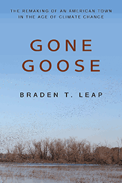

<HTML><head><script> (function(i,s,o,g,r,a,m){i['GoogleAnalyticsObject']=r;i[r]=i[r]||function(){  (i[r].q=i[r].q||[]).push(arguments)},i[r].l=1*new Date();a=s.createElement(o),  m=s.getElementsByTagName(o)[0];a.async=1;a.src=g;m.parentNode.insertBefore(a,m)   })(window,document,'script','//www.google-analytics.com/analytics.js','ga');   ga('create', 'UA-43183130-1', 'temple.edu');   ga('send', 'pageview'); </script><title>Braden T. Leap: Gone Goose - Print</TITLE><link rel="stylesheet" href="../general.css" type="text/css"><SCRIPT LANGUAGE = JAVASCRIPT></SCRIPT></HEAD><BODY LINK="#3152A5" VLINK="#3152A5" ALINK=Gray BGCOLOR=White><CENTER><P CLASS=intro><br>How members of a rural town in the Midwest worked to sustain their culture and community in response to climate change<br><br></P></CENTER><br>&nbsp;<!--none//--><Table width="100%" border=0 cellspacing=5><tr><td width="175" align="center"></td><td><h1 class = "booktitle">Gone Goose</h1> <h1 class = "subtitle">The Remaking of an American Town in the Age of Climate Change</h1><h3 class="author">Braden T. Leap </h3><p class="info">paper EAN: 978-1-4399-1734-3 (ISBN:1-4399-1734-5)</br>$34.95, Dec 18, <font color=#990033>Not Yet Published Preorder</font><br><p class="info">cloth EAN:  978-1-4399-1733-6 (ISBN:1-4399-1733-7)</br>$99.50, Dec 18, <font color=#990033>Not Yet Published Preorder</font><br><p class="info">Electronic Book EAN: 978-1-4399-1735-0 (ISBN:1-4399-1735-3)</br>$34.95, Dec 18, <font color=#990033>Not Yet Published Preorder</font><br><p class="info">296 pp, 6 x 9, 1&nbsp;figures 1 tables, 1 figs., 11 halftones</p></td></tr></table></P></td></tr></table><BR><BLOCKQUOTE></BLOCKQUOTE><P><P><p>Sumner, MO, pop. 102, near the Swan Lake National Wildlife Refuge, proclaims itself "The Wild Goose Capital of the World." It even displays Maxie, the World's largest goose: a 40-foot tall fiberglass statue with a wingspan stretching more than 60 feet. But while the 200,000 Canada geese that spent their falls and winters at Swan Lake helped generate millions of dollars for the local economy-with hunting and the annual Goose Festival-climate change, as well as environmental and land use issues, have caused the birds to disappear. The economic loss of the geese and the activities they inspired served as key building blocks in the rural identities residents had developed and treasured.<br/><br/>In his timely and topical book, <i>Gone Goose, </i>Braden Leap observes how members of this rural town adapted, reorganized, and reinvented themselves in the wake of climate change-and how they continued to cultivate respect and belonging in their community. Leap conducted interviews with residents and participated in various community events to explore how they reimagine their relationships with each other as well as their community's relationship with the environment, even as they wish the geese would return.<br><P CLASS="top"><A HREF="#top">BACK TO TOP</A></P></p><P></p><p></b></p><BR><p></p></P><BR>&nbsp;<p><P><H2  class="inpageheading"><A NAME="author bio"></a>About the Author(s)</H2><p><b>Braden T. Leap</b> is an Assistant Professor of Sociology at Mississippi State University.<br><P CLASS="top"><A HREF="#top">BACK TO TOP</A></P></P><p><h2 class="inpageheading"><a name="subjects"></a>Subject Categories</h2> <p><a href="http://www.temple.edu/tempress/sociology.html" target="_top">Sociology</a> <br><a href="http://www.temple.edu/tempress/animal_soc.html" target="_top">Animals and Society</a> <br><a href="http://www.temple.edu/tempress/nature.html" target="_top">Nature and the Environment</a> <br><a href="http://www.temple.edu/tempress/political.html" target="_top">Political Science and Public Policy</a> <br><a href="" target="_top"></a> </p></p><P></P><P>&nbsp;</P><font face="Arial" size="1"><a href="copyright.html" OnMouseOver="window.status='Web Copyright Policy';return true;" OnMouseOut="window.status=''" TITLE="Web Copyright Policy">&copy;</a> 2019 <a href="http://www.temple.edu" target="new" OnMouseOver="window.status='Link to Temple University home page';return true;" OnMouseOut="window.status=''" TITLE="Link to Temple University home page">Temple University</a>. All Rights Reserved. This page: <a href="http://www.temple.edu/tempress/titles/2537_reg.html"OnMouseOver="window.status='Link to the book page';return true;" OnMouseOut="window.status=''" TITLE="Link to the book page">http://www.temple.edu/tempress/titles/2537_reg.html.</a></font></BODY></HTML>                    
